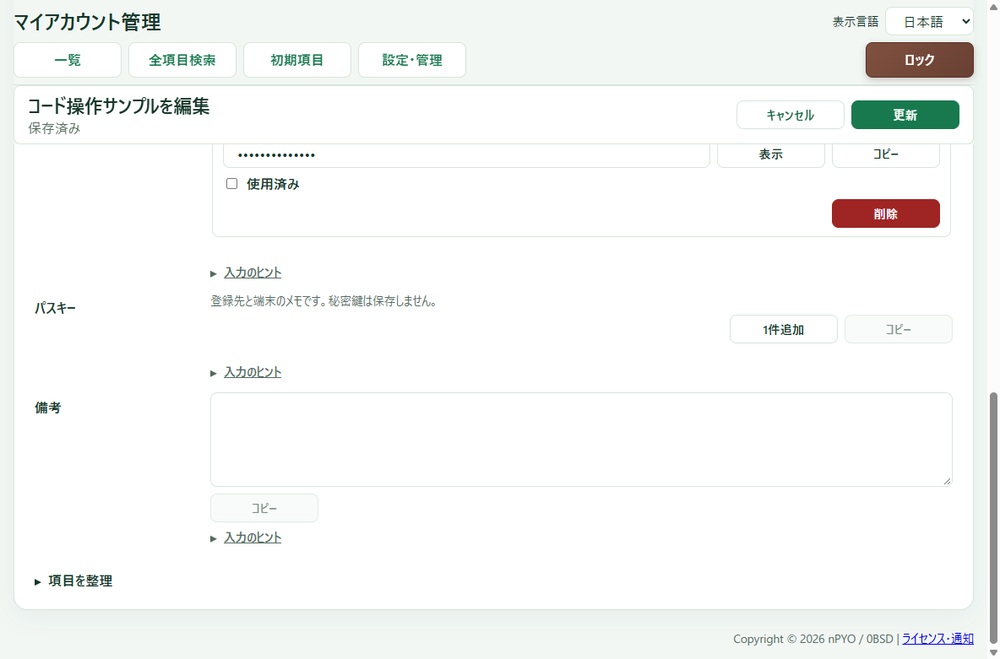
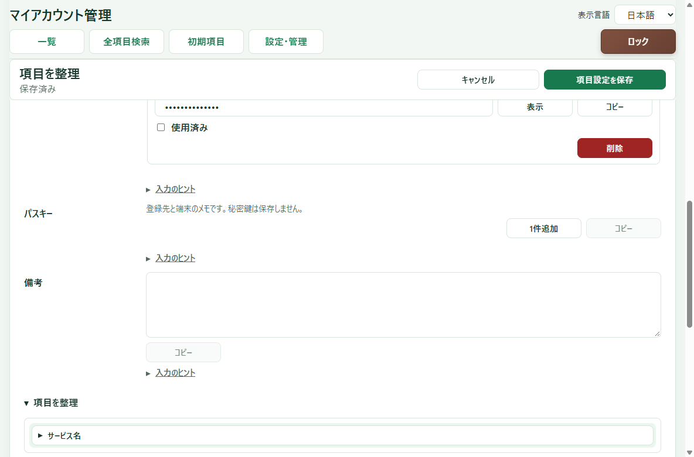
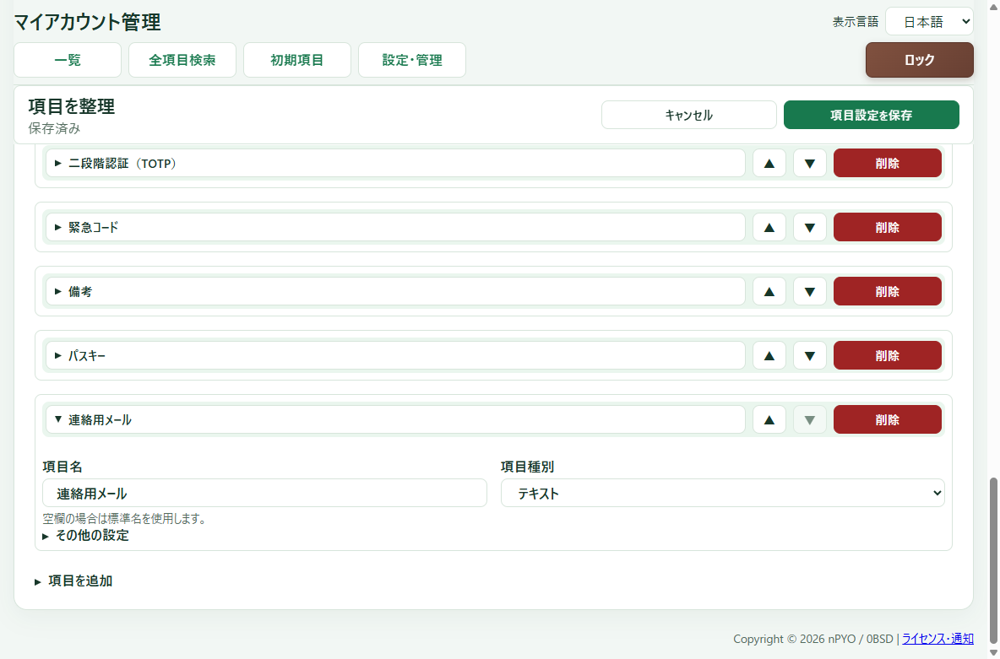
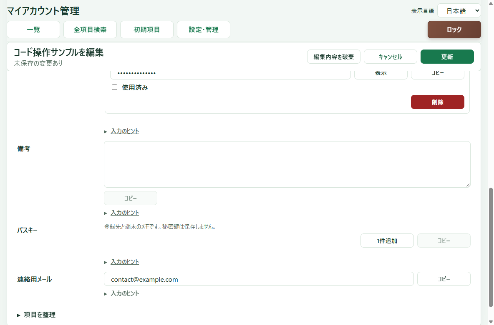

23アカウント固有の項目
登録済みアカウントの入力欄は、そのアカウントの編集画面で整理します。
1編集画面の下へ進む
対象アカウントを編集し、末尾の［項目を整理］を押します。

2項目設定の編集に切り替わる
上部が［項目を整理］に変わります。下へスクロールして対象を探します。

3対象の項目を開く
例では追加済みの［連絡用メール］を開きます。

4項目種別を選ぶ
例ではメールアドレスに変更します。

5［項目設定を保存］を押す
このアカウントの項目を保存したメッセージを確認します。

6値はアカウント編集で入力する
設定を閉じた後、入力欄へ値を入れます。例は contact@example.com です。

7［更新］で値を保存
アカウントを保存したメッセージを確認します。

8詳細で値を確認する
［その他の登録情報］を開いて確認します。